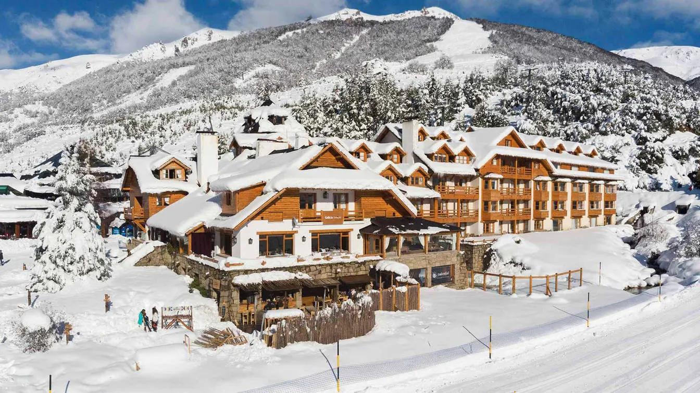
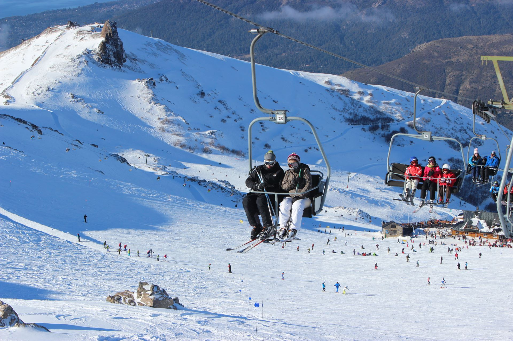
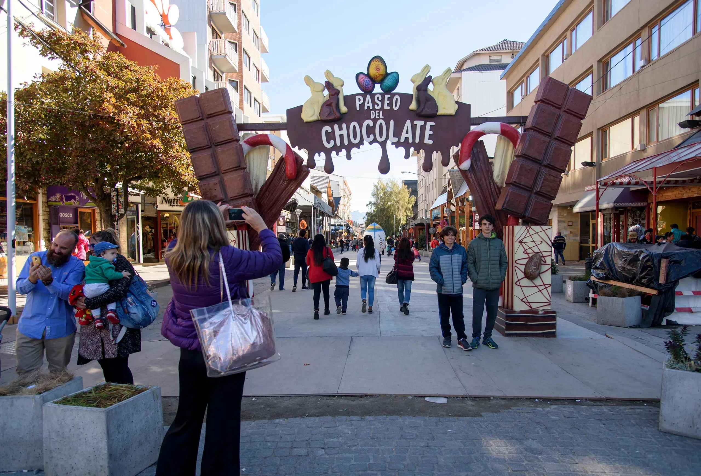
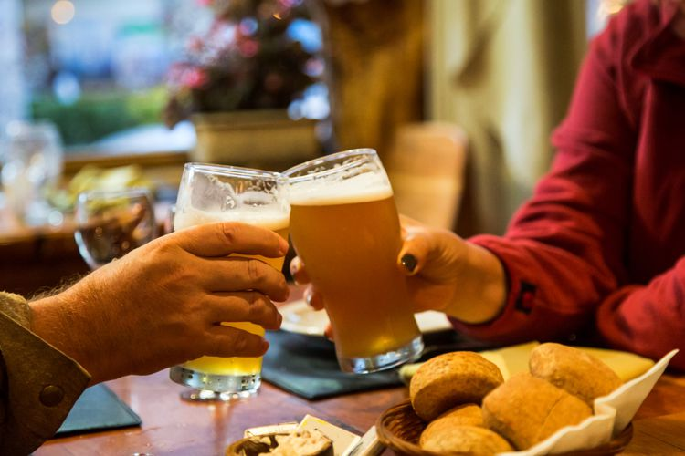
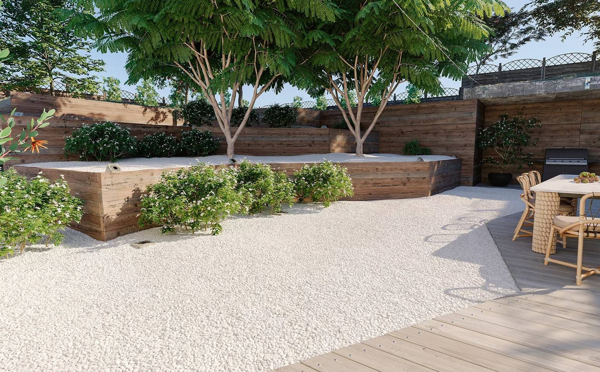

Developed by European immigrants (Swiss and German) in the early 20th century.
Experince Skiing in Bariloche

Home to Cerro Catedral, the largest ski center in the Southern Hemisphere, surrounded by Alpine-style lakes.
The mountain is named after its peaks, which look like Gothic cathedrals due to frost wedging (water freezes in cracks and snaps the rock).
They recently upgraded to high-speed quadruple lifts, making it the most technologically advanced ski hub in South America.
What to Expect
World-class powder, fondue dinners, and views of the Nahuel Huapi Lake from the ski lifts.
Nerdy Facts
This is the largest ski resort in the Southern Hemisphere! We’re talking 120 kilometers of slopes spread over 600 hectares.
You start at a base of 1,030 meters and summit at 2,180 meters. That’s a vertical drop of over one kilometer!
It features the only six-seater high-speed bubble lift in South America (the Séxtuple Express). It can move 36,000 people per hour—that’s like moving the entire population of a small city up a mountain every sixty minutes!
Make sure to tell your visitors about the Nubes (Clouds) trail. At the top, you get a 360° view of the Nahuel Huapi Lake. Because the lake is so large and deep, it creates its own microclimate, often forming a "sea of clouds" below you while you ski in the sun.
THE "GRAVITY": Cerro Catedral

Conquer the largest ski resort south of the equator! With over 120km of slopes, you’re not just skiing; you’re navigating a massive vertical labyrinth.
Experience 1,150 meters of vertical drop. That’s a massive change in atmospheric pressure and one incredible leg workout!
Take the Nubes lift to the summit. When you look out over the Nahuel Huapi Lake, you’re seeing a glacial basin so deep ($464\text{ meters!}$) it stays a constant, bone-chilling temperature year-round.
THE "THERMODYNAMIC": The Chocolate Route

Recharge your glycogen levels at the world-famous Mitre Street.
Visit Rapanui or Mamuschka. This isn't store-bought candy; it's an edible study in emulsification and tempering.
Must do!
The "Submarino." Drop a bar of pure 70% cocoa into a steaming glass of local milk. Watch the molecular breakdown as it transforms into the richest fuel known to man. It’s a delicious lesson in heat transfer!
THE "FERMENTATION": Craft Beer Capital

Discover why the world’s best lagers trace their DNA back to these forests.
Visit Patagonia Brewery or Wesley. The beer here is brewed with glacial meltwater—so pure it has zero mineral interference, allowing the local hops to hit your palate with scientific precision.
Imagine sipping a fresh IPA while staring at the jagged "Cathedral" peaks that gave the mountain its name. It’s the ultimate reward for a day of fighting friction on the slopes!
THE "SECRET": Piedras Blancas

xperience the most hilarious application of physics—The Zipline and Sledding!
Feel the laws of Inertia and Centripetal Force as you fly through the ancient Lenga forests on a high-speed sledding track. It’s pure, unadulterated velocity!
Packing Tips
The snow reflects up to 80% of UV rays. Without goggles and sunscreen, your retinas and skin will pay the price!
The Three Layer Rule:
Base layer (moisture-wicking), Mid-layer (thermal insulation), and Outer-shell (wind/water protection). It’s the only way to manage the Patagonian microclimates!